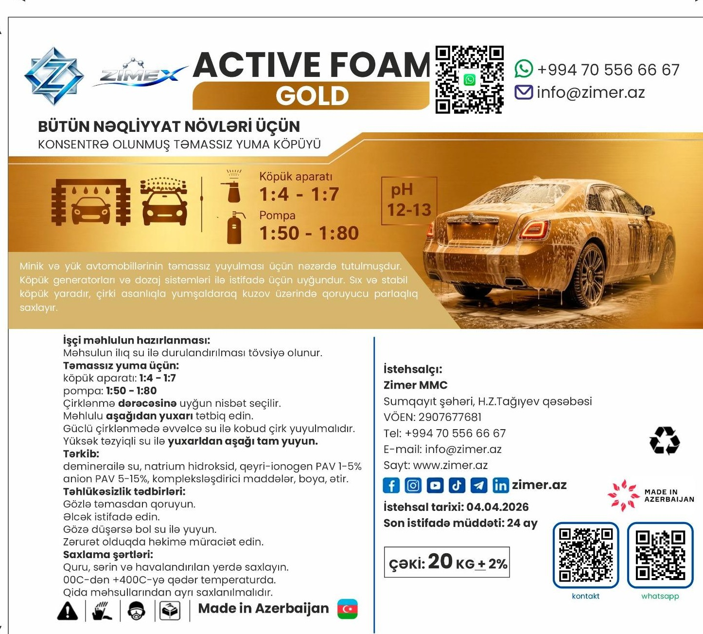
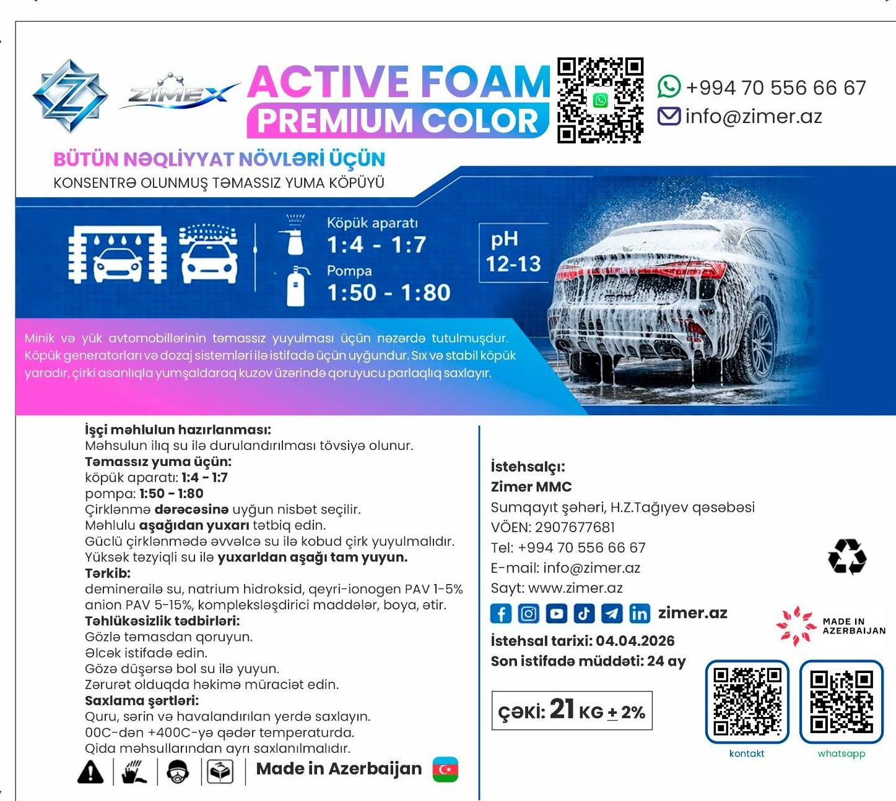
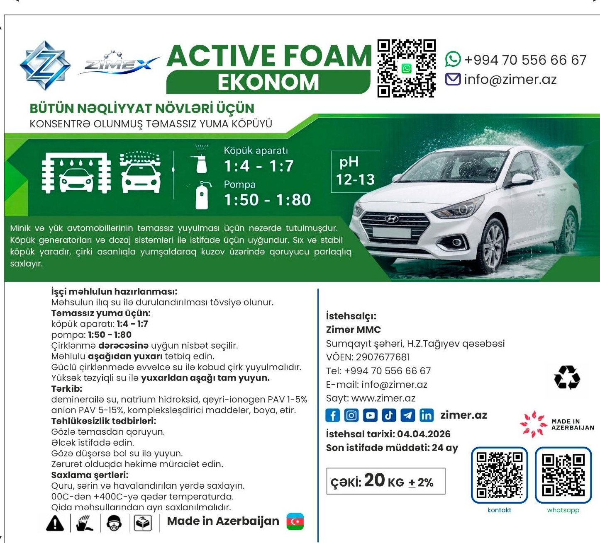

Hər Zimex xətti fərqli ehtiyac üçün hazırlanıb — lüks parıltıdan gündəlik qənaətli qulluğa qədər.

Zimex Active Foam Gold, bütün nəqliyyat növləri üçün hazırlanmış konsentrə olunmuş təmassız yuma köpüyüdür. Sıx və stabil köpük çirki asanlıqla yumşaldaraq kuzov üzərində uzunmüddətli qoruyucu parlaqlıq buraxır — lüks seqment üçün nəzərdə tutulan formula.

Zimex Active Foam Color, eyni güclü formulanı canlı, diqqətçəkən rəngli köpüklə birləşdirir. Yuma prosesini vizual cəhətdən fərqləndirərkən, kuzovu eyni etibarlılıqla təmizləyir.

Zimex Active Foam Ekonom, gündəlik və tez-tez istifadə üçün nəzərdə tutulub. Eyni tətbiq prinsipini və effektiv çirk təmizləmə qabiliyyətini əlçatan qiymətə təqdim edir.
Topdan satış və əməkdaşlıq təklifləri üçün də bizimlə əlaqə saxlayın.